🎯 Learning Objectives
By the end of this lecture, you will be able to:
- ✅ Create line plots, scatter plots, bar charts, and histograms
- ✅ Customize plots: titles, labels, legends, colors, and styles
- ✅ Use subplots and figure layouts for multi-panel figures
- ✅ Format text with LaTeX and control font properties
- ✅ Save publication-quality figures to PDF, PNG, and SVG
📝 Practice Exercises
- Customize a sine plot: Plot
sin(x)from 0 to 4π with a red dashed line, labeled axes, a title, and a legend. - Multi-panel figure: Create a 2×2 grid of subplots showing: sin(x), cos(x), tan(x) (clipped to [−5, 5]), and exp(x).
- Histogram: Generate 1000 random numbers from a normal distribution (
np.random.randn(1000)) and plot a histogram with 30 bins. - Bar chart: Create a bar chart showing the populations of 5 African countries of your choice.
- Challenge — Styled figure: Recreate any plot from this lecture but add: LaTeX in the title, a grid, custom tick labels, and save it as a PNG file with
plt.savefig().
import numpy as np
import matplotlib.pyplot as plt
# Exercise 1: Customized sine plot
# Your code here
# Exercise 2: 2x2 subplots
# Your code here
# Exercise 3: Histogram
# Your code here
# Exercise 4: Bar chart
# Your code here
# Exercise 5 (Challenge): Styled figure with LaTeX
# Your code here
📑 Table of Contents
- ● 🎨 Lecture 12 — Matplotlib
- 1. ● **Simple curve plot**
- 2. ▸ **Cosine & Sine Plot**
- 3. ● Setting axes limits
- 4. ● Setting axes ticks
- 5. ● Setting axes tick labels
- 6. ● Adding legends
- 7. ▸ **Figure and Subplots**
- 8. ● **Formatting text: LaTeX, fontsize, font family**
- 9. ● **Line and marker styles**
- 10. ● **Logarithmic scale**
- 11. ● **Histogram plot**
- 12. ● **Common types of plots**
- 13. ▸ 🎯 Key Takeaways
🔗 Building on What You Know
In Lectures 10–11, you crunched numbers with NumPy. But numbers alone don't tell a story. A single well-chosen chart can reveal patterns that tables of numbers hide. Matplotlib turns your data into visual insights — from quick exploratory plots to polished, publication-ready figures.
🌍 Real-World Scenario
You've just finished analyzing COVID-19 case data for 5 African countries over 2 years. You have the numbers — but your team lead asks: "Can you show me the trend?" A table of 3,650 rows tells you nothing at a glance. A single line chart tells the whole story.
Visualization turns data into understanding. Matplotlib is Python's foundational plotting library — whether you need a quick exploratory plot or a publication-ready figure, it starts here.
Adapted from Matplotlib-guide and Matplotlib-official.
Matplotlib is a Python library for data visualization (2D/3D-graphics, animation etc.). It provides publication-quality figures in many formats. We will explore matplotlib in interactive mode covering most common cases in this tutorial.
pyplot provides a convenient interface to the matplotlib object-oriented plotting library. Let’s look at the line
import matplotlib.pyplot as plt
of the previous code.
This is the preferred format to import the main Matplotlib submodule for plotting,
pyplot. It’s the best practice and in order to avoid pollution of the global namespace.
The same import style is used in the official documentation, so we want to be
consistent with that.
Important commands are explained with interactive examples.
# mandatory/necessary imports
import numpy as np
import matplotlib.pyplot as plt
#from mpl_toolkits.mplot3d import Axes3D # for 3D plotting
# check version
matplotlib.__version__
---------------------------------------------------------------------------
NameError Traceback (most recent call last)
Cell In[3], line 2
1 # check version
----> 2 matplotlib.__version__
NameError: name 'matplotlib' is not defined
Let’s now see a simple plotting and understand the ingredients that goes into customizing our plot as per our will and wish.
Simple curve plot#
# get 10 linearly spaced points in the interval [0, 5)
x = np.linspace(0, 5, 10)
y = x ** 2
# create a figure/canvas of desired size
plt.figure(figsize=(8, 6))
# plot values; with a color `red`
plt.plot(x, y, 'r')
# give labels to the axes
plt.xlabel('x')
plt.ylabel('y')
# give a title to the plot
plt.title(r"Plot of $y=x^2$")
plt.show()
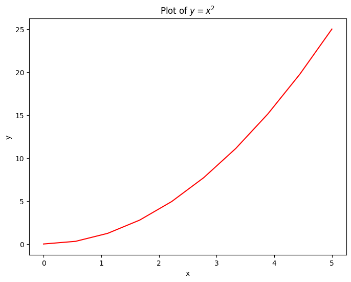
x = np.linspace(0, 5, 10)
print(x)
<div style="text-align: right; margin-top: 12px; font-size: 0.85em;"><a href="#table-of-contents" style="color: #667eea; text-decoration: none;">↑ Back to TOC</a></div>
[0. 0.55555556 1.11111111 1.66666667 2.22222222 2.77777778
3.33333333 3.88888889 4.44444444 5. ]
Cosine & Sine Plot#
Starting with default settings, we would like to draw a cosine and sine functions on the same plot. Then, we will make it look prettier by customizing the default settings.
# 256 linearly spaced values between -pi and +pi
# both endpoints would be included; check (X[0], X[-1])
X = np.linspace(-np.pi, np.pi, 256, endpoint=True)
# compute cosine and sin values
C, S = np.cos(X), np.sin(X)
# plot both curves
plt.plot(X, C)
plt.plot(X, S)
# show the plot
plt.show()
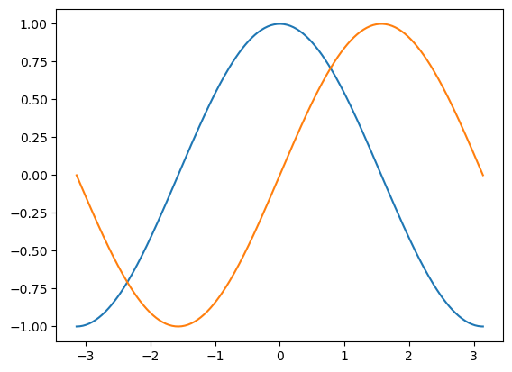
The above plot doesn’t seem too appealing. So, let’s customizing the default settings a bit.#
Matplotlib allows the aspect ratio, DPI and figure size to be specified when the Figure object is created, using the figsize and dpi keyword arguments. figsize is a tuple of the width and height of the figure in inches, and dpi is the dots-per-inch (pixel per inch). To create an \(800\times 600\) pixel, \(100\) dots-per-inch figure, we can do:
# Create a new figure of size 800x600, using 100 dots per inch
plt.figure(figsize=(8, 6), dpi=100)
# Create a new subplot from a grid of 1x1
plt.subplot(111)
# Now, plot `cosine` using `blue` color with a continuous line of width 1 (pixel)
plt.plot(X, C, color="blue", linewidth=1.0, linestyle="-")
# And plot `sine` using `green` color with a continuous line of width 1 (pixel)
plt.plot(X, S, color="green", linewidth=1.0, linestyle="-")
# Set x limits to [-4, +4]
plt.xlim(-4.0, 4.0)
# Set y limits to [-1, +1]
plt.ylim(-1.0, 1.0)
# optionally, save the figure as a pdf using 72 dots per inch
plt.savefig("./sine_cosine.pdf", format='pdf', dpi=72)
# show grid
plt.grid(True)
# Show the plot on the screen
plt.show()
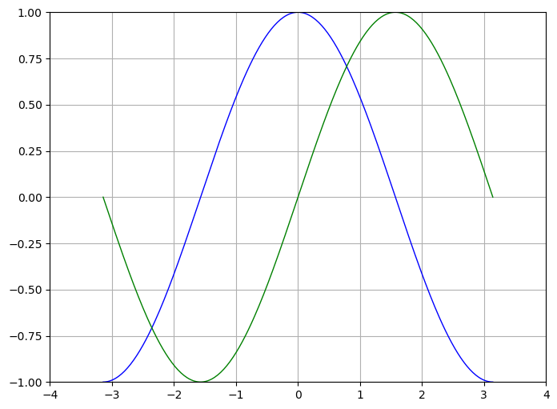
Setting axes limits#
Instead of hard-coding the xlim and ylim values, we can take these values from the array itself and then set the limits accordingly.
We can also change the linewidth and color kwargs as per our wish.
# set figure size and dpi (dots per inch)
plt.figure(figsize=(10, 6), dpi=80)
# Create a new subplot from a grid of 1x1
plt.subplot(111)
# customize color and line width
plt.plot(X, C, color="blue", linewidth=2.5, linestyle="-")
plt.plot(X, S, color="red", linewidth=2.5, linestyle="-")
# set lower & upper bound by taking min & max value respectively
plt.xlim(X.min()*1.1, X.max()*1.1)
plt.ylim(C.min()*1.1, C.max()*1.1)
# optionally, save the figure as a pdf using 72 dots per inch
plt.savefig("./sine_cosine.pdf", format='pdf', dpi=80)
# show it on screen
plt.show()
<div style="text-align: right; margin-top: 12px; font-size: 0.85em;"><a href="#table-of-contents" style="color: #667eea; text-decoration: none;">↑ Back to TOC</a></div>
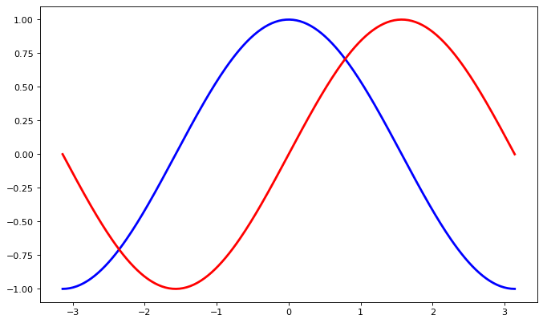
Setting axes ticks#
# set figure size and dpi (dots per inch)
plt.figure(figsize=(10, 6), dpi=80)
# Create a new subplot from a grid of 1x1
plt.subplot(111)
# customize color and line width
plt.plot(X, C, color="blue", linewidth=2.5, linestyle="-")
plt.plot(X, S, color="red", linewidth=2.5, linestyle="-")
# set lower & upper bound by taking min & max value respectively
plt.xlim(X.min()*1.1, X.max()*1.1)
plt.ylim(C.min()*1.1, C.max()*1.1)
# provide five tick values for x and 3 for y
plt.xticks([-np.pi, -np.pi/2, 0, np.pi/2, np.pi])
plt.yticks([-1, 0, +1])
# optionally, save the figure as a pdf using 72 dots per inch
plt.savefig("./sine_cosine.pdf", format='pdf', dpi=80)
# show it on screen
plt.show()
<div style="text-align: right; margin-top: 12px; font-size: 0.85em;"><a href="#table-of-contents" style="color: #667eea; text-decoration: none;">↑ Back to TOC</a></div>
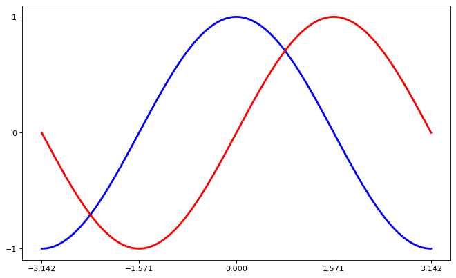
Setting axes tick labels#
We fixed the aexs ticks but their label is not very explicit. We could guess that 3.142 is π but it would be better to make it explicit. When we set tick values, we can also provide a corresponding label in the second argument list. Note that we’ll use latex to allow for nice rendering of the label.
# set figure size and dpi (dots per inch)
plt.figure(figsize=(10, 6), dpi=80)
# Create a new subplot from a grid of 1x1
plt.subplot(111)
# customize color and line width
plt.plot(X, C, color="blue", linewidth=2.5, linestyle="-")
plt.plot(X, S, color="red", linewidth=2.5, linestyle="-")
# set lower & upper bound by taking min & max value respectively
plt.xlim(X.min()*1.1, X.max()*1.1)
plt.ylim(C.min()*1.1, C.max()*1.1)
# provide five tick values for x and 3 for y
# and pass the corresponding label as a second argument.
plt.xticks([-np.pi, -np.pi/2, 0, np.pi/2, np.pi],
[r'$-\pi$', r'$-\pi/2$', r'$0$', r'$+\pi/2$', r'$+\pi$'])
plt.yticks([-1, 0, +1],
[r'$-1$', r'$0$', r'$+1$'])
# optionally, save the figure as a pdf using 72 dots per inch
plt.savefig("./sine_cosine.pdf", format='pdf', dpi=80)
# show it on screen
plt.show()
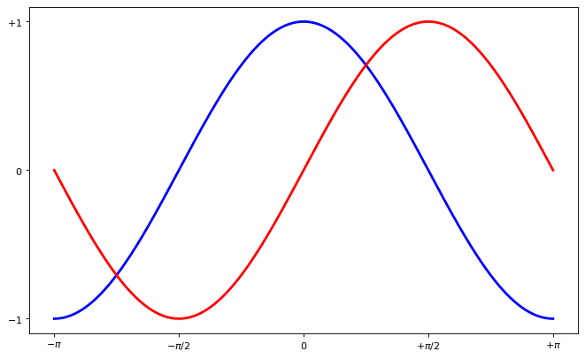
Adding legends#
# set figure size and dpi (dots per inch)
plt.figure(figsize=(10, 6), dpi=80)
# Create a new subplot from a grid of 1x1
plt.subplot(111)
# customize color and line width
# `label` is essential for `plt.legend` to work
plt.plot(X, C, color="blue", linewidth=2.5, linestyle="-", label="cosine")
plt.plot(X, S, color="red", linewidth=2.5, linestyle="-", label="sine")
# set lower & upper bound by taking min & max value respectively
plt.xlim(X.min()*1.1, X.max()*1.1)
plt.ylim(C.min()*1.1, C.max()*1.1)
# provide five tick values for x and 3 for y
# and pass the corresponding label as a second argument.
plt.xticks([-np.pi, -np.pi/2, 0, np.pi/2, np.pi],
[r'$-\pi$', r'$-\pi/2$', r'$0$', r'$+\pi/2$', r'$+\pi$'])
plt.yticks([-1, 0, +1],
[r'$-1$', r'$0$', r'$+1$'])
# show legend on the upper left side of the axes
plt.legend(loc='upper left', frameon=False)
# optionally, save the figure as a pdf using 72 dots per inch
plt.savefig("./sine_cosine.pdf", format='pdf', dpi=80)
# show it on screen
plt.show()
<div style="text-align: right; margin-top: 12px; font-size: 0.85em;"><a href="#table-of-contents" style="color: #667eea; text-decoration: none;">↑ Back to TOC</a></div>
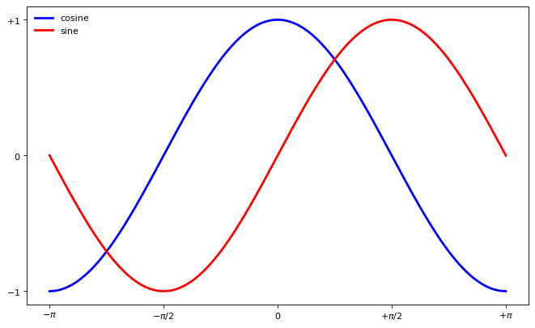
Figure and Subplots#
Figure
A figure is the windows in the GUI that has “Figure #” as title. Figures are numbered starting from 1 as opposed to the normal Python way starting from 0. There are several parameters that determine how the figure looks like.
Argument |
Default |
Description |
|---|---|---|
num |
1 |
number of figure |
figsize |
figure.figsize |
figure size in in inches (width, height) |
dpi |
figure.dpi |
resolution in dots per inch |
facecolor |
figure.facecolor |
color of the drawing background |
edgecolor |
figure.edgecolor |
color of edge around the drawing background |
frameon |
True |
draw figure frame or not |
Subplot
With subplot you can arrange plots in a regular grid. You need to specify the number of rows and columns and the number of the plot.
The following plot shows how to use the figure title, axis labels, and legends in a subplot:
x = np.linspace(0, 5, 10)
y = x ** 2
fig, axes = plt.subplots(1, 2, figsize=(8,4), dpi=100)
# plot subplot 1
axes[0].plot(x, x**2, color="green", label="y = x**2")
axes[0].plot(x, x**3, color="red", label="y = x**3")
axes[0].legend(loc=2); # upper left corner
axes[0].set_xlabel('x')
axes[0].set_ylabel('y')
axes[0].set_title('Plot of y=x^2 and y=x^3')
# plot subplot 2
axes[1].plot(x, x**2, color="violet", label="y = x**2")
axes[1].plot(x, x**3, color="blue", label="y = x**3")
axes[1].legend(loc=2); # upper left corner
axes[1].set_xlabel('x')
axes[1].set_ylabel('y')
axes[1].set_title('Plot of y=x^2 and y=x^3')
# `fig.tight_layout()` automatically adjusts the positions of the axes on the figure canvas so that there is no overlapping content
# comment this out to see the difference
fig.tight_layout()
plt.show()
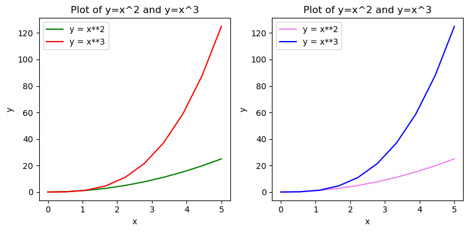
Formatting text: LaTeX, fontsize, font family#
Matplotlib has great support for \(LaTeX\). All we need to do is to use dollar signs encapsulate LaTeX in any text (legend, title, label, etc.). For example, "$y=x^3$".
But here we might run into a slightly subtle problem with \(LaTeX\) code and Python text strings. In \(LaTeX\), we frequently use the backslash in commands, for example \alpha to produce the symbol α. But the backslash already has a meaning in Python strings (the escape code character). To avoid Python messing up our latex code, we need to use “raw” text strings. Raw text strings are prepended with an 'r', like r"\alpha" or r'\alpha' instead of "\alpha" or '\alpha':
fig, ax = plt.subplots(figsize=(8,4), dpi=100)
ax.plot(x, x**2, label=r"$y = \alpha^2$")
ax.plot(x, x**3, label=r"$y = \alpha^3$")
ax.legend(loc=2) # upper left corner
ax.set_xlabel(r'$\alpha$', fontsize=18)
ax.set_ylabel(r'$y$', fontsize=18)
ax.set_title(r'Plot of y=$\alpha^{2}$ and y=$\alpha^{3}$')
plt.show()
<div style="text-align: right; margin-top: 12px; font-size: 0.85em;"><a href="#table-of-contents" style="color: #667eea; text-decoration: none;">↑ Back to TOC</a></div>
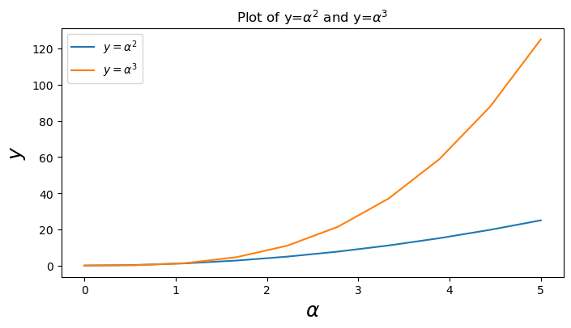
Line and marker styles#
To change the line width, we can use the linewidth or lw keyword argument. The line style can be selected using the linestyle or ls keyword arguments:
fig, ax = plt.subplots(figsize=(12,6))
# possible marker symbols: marker = '+', 'o', '*', 's', ',', '.', '1', '2', '3', '4', ...
ax.plot(x, x+ 9, color="green", lw=2, ls='--', marker='+')
ax.plot(x, x+10, color="green", lw=2, ls='--', marker='o')
ax.plot(x, x+11, color="green", lw=2, ls='--', marker='s')
ax.plot(x, x+12, color="green", lw=2, ls='--', marker='1')
plt.show()
<div style="text-align: right; margin-top: 12px; font-size: 0.85em;"><a href="#table-of-contents" style="color: #667eea; text-decoration: none;">↑ Back to TOC</a></div>
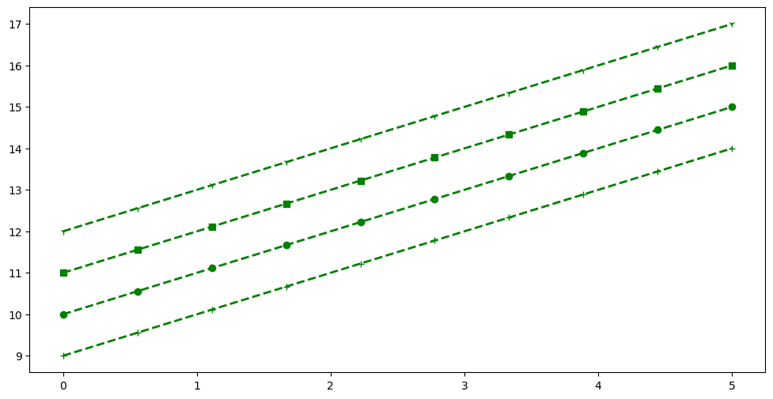
Logarithmic scale#
It is also possible to set a logarithmic scale for one or both axes. This functionality is in fact only one application of a more general transformation system in Matplotlib. Each of the axes’ scales are set seperately using set_xscale and set_yscale methods which accept one parameter (with the value "log" in this case):
fig, axes = plt.subplots(1, 2, figsize=(12, 6))
# plot normal scale
axes[0].plot(x, np.exp(x), color="red")
axes[0].plot(x, x**2, color="green")
axes[0].set_title("Normal scale")
axes[0].grid() # show grid
# plot `log` scale
axes[1].plot(x, np.exp(x), color="blue")
axes[1].plot(x, x**2, color="violet")
axes[1].set_yscale("log")
axes[1].set_title("Logarithmic scale (y)")
axes[1].grid() # show grid
fig.tight_layout()
plt.show()
<div style="text-align: right; margin-top: 12px; font-size: 0.85em;"><a href="#table-of-contents" style="color: #667eea; text-decoration: none;">↑ Back to TOC</a></div>
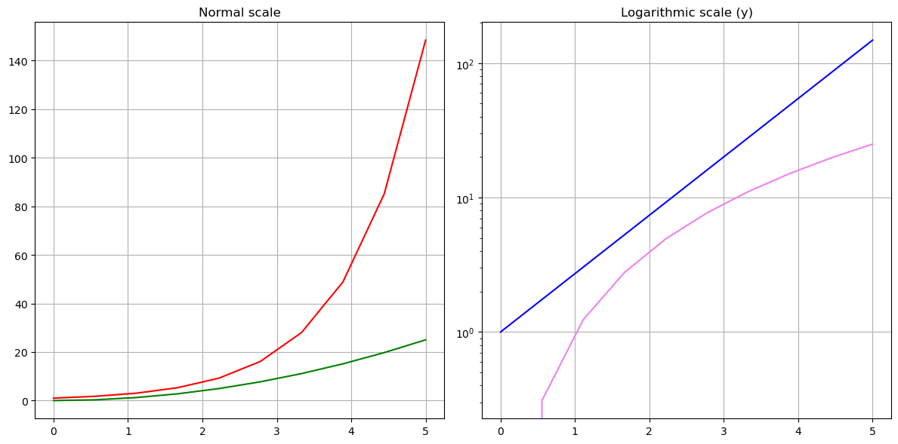
Histogram plot#
n = np.random.randn(100000)
fig, axes = plt.subplots(1, 2, figsize=(12, 6))
# plot default histogram
axes[0].hist(n, color="blue")
axes[0].set_title("Default histogram")
axes[0].set_xlim((np.min(n), np.max(n)))
# plot cumulative histogram
axes[1].hist(n, cumulative=True, bins=50, color="green")
axes[1].set_title("Cumulative detailed histogram")
axes[1].set_xlim((np.min(n), np.max(n)))
fig.tight_layout()
plt.show()
<div style="text-align: right; margin-top: 12px; font-size: 0.85em;"><a href="#table-of-contents" style="color: #667eea; text-decoration: none;">↑ Back to TOC</a></div>
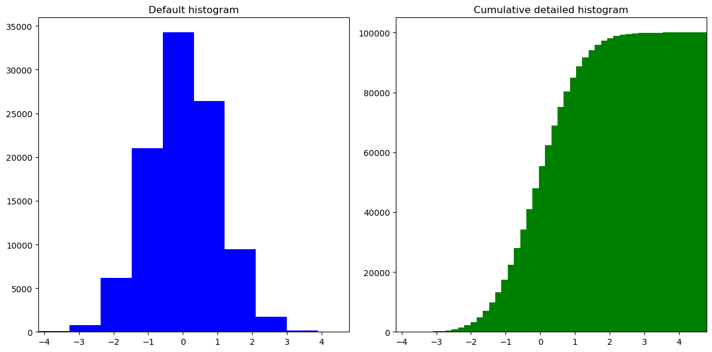
Common types of plots#
Scatter plot A simple scatter plot of random values drawn from the standard Gaussian distribution.
# set figure size and dpi (dots per inch)
plt.figure(figsize=(10, 6), dpi=80)
# Create a new subplot from a grid of 1x1
plt.subplot(111)
n = 1024
X = np.random.normal(0,1,n)
Y = np.random.normal(0,1,n)
# color is given by the angle between X & Y
T = np.arctan2(Y,X)
plt.axes([0.025, 0.025, 0.95, 0.95])
# The alpha blending value, between 0 (transparent) and 1 (opaque).
# s - marker size
# c - color
plt.scatter(X,Y, s=75, c=T, alpha=.5)
plt.xlim(-2.0, 2.0), plt.xticks([])
plt.ylim(-2.0, 2.0), plt.yticks([])
plt.show()
Contour plot
A contour plot represents a 3-dimensional surface by plotting constant z slices, called contours, on a 2-dimensional grid.
# set figure size and dpi (dots per inch)
plt.figure(figsize=(10, 6), dpi=80)
# Create a new subplot from a grid of 1x1
plt.subplot(111)
def f(x,y):
return (1-x/2+x**5+y**3)*np.exp(-x**2-y**2)
n = 256
x = np.linspace(-3, 3, n)
y = np.linspace(-3, 3, n)
X,Y = np.meshgrid(x, y)
plt.axes([0.025, 0.025, 0.95, 0.95])
plt.contourf(X, Y, f(X,Y), 8, alpha=.75, cmap=plt.cm.hot)
C = plt.contour(X, Y, f(X,Y), 8, colors='black')
plt.clabel(C, inline=1, fontsize=10)
plt.xticks([]), plt.yticks([])
plt.show()
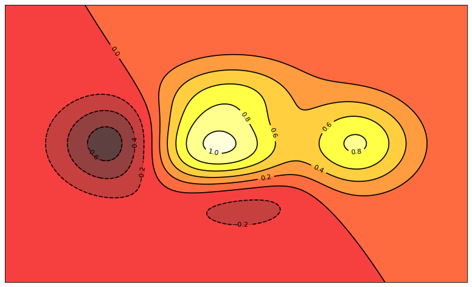
3D plot
Represent a 3-dimensional surface. To use 3D graphics in matplotlib, we first need to create an axes instance of the classAxes3D. 3D axes can be added to a matplotlib figure canvas in exactly the same way as 2D axes, but a conventient way to create a 3D axis instance is to use the projection=’3d’ keyword argument to the add_axes or add_subplot functions.Note: You can’t rotate the plot in jupyter notebook. Plot it as a standalone module to zoom around and visualize it by rotating.
# create figure and set figure size and dpi (dots per inch)
fig = plt.figure(figsize=(10, 6), dpi=80)
ax = Axes3D(fig)
# inputs
X = np.arange(-4, 4, 0.25)
Y = np.arange(-4, 4, 0.25)
X, Y = np.meshgrid(X, Y)
# 3D surface
R = np.sqrt(X**2 + Y**2)
Z = np.sin(R)
ax.plot_surface(X, Y, Z, rstride=1, cstride=1, cmap=plt.cm.hot)
ax.contourf(X, Y, Z, zdir='z', offset=-2, cmap=plt.cm.hot)
# set z axis limit
ax.set_zlim(-3, 3)
plt.show()
<Figure size 800x480 with 0 Axes>
3D Surface Plot
alpha = 0.7
phi_ext = 2 * np.pi * 0.5
def flux_qubit_potential(phi_m, phi_p):
return 2 + alpha - 2 * np.cos(phi_p)*np.cos(phi_m) - alpha * np.cos(phi_ext - 2*phi_p)
phi_m = np.linspace(0, 2*np.pi, 100)
phi_p = np.linspace(0, 2*np.pi, 100)
X,Y = np.meshgrid(phi_p, phi_m)
Z = flux_qubit_potential(X, Y).T
fig = plt.figure(figsize=(25, 10))
# `ax` is a 3D-aware axis instance, because of the projection='3d' keyword argument to add_subplot
ax = fig.add_subplot(1, 2, 1, projection='3d')
p = ax.plot_surface(X, Y, Z, rstride=4, cstride=4, linewidth=0)
# surface_plot with color grading and color bar
ax = fig.add_subplot(1, 2, 2, projection='3d')
p = ax.plot_surface(X, Y, Z, rstride=1, cstride=1, cmap=plt.cm.coolwarm, linewidth=0, antialiased=False)
cb = fig.colorbar(p, shrink=0.5)
plt.show()
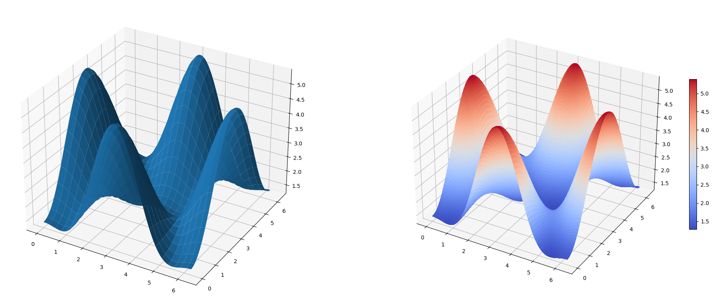
3D Wireframe Plot
fig = plt.figure(figsize=(25, 10))
# `ax` is a 3D-aware axis instance, because of the projection='3d' keyword argument to add_subplot
ax = fig.add_subplot(1, 1, 1, projection='3d')
# create and plot a wireframe
p = ax.plot_wireframe(X, Y, Z, rstride=4, cstride=4)
plt.show()
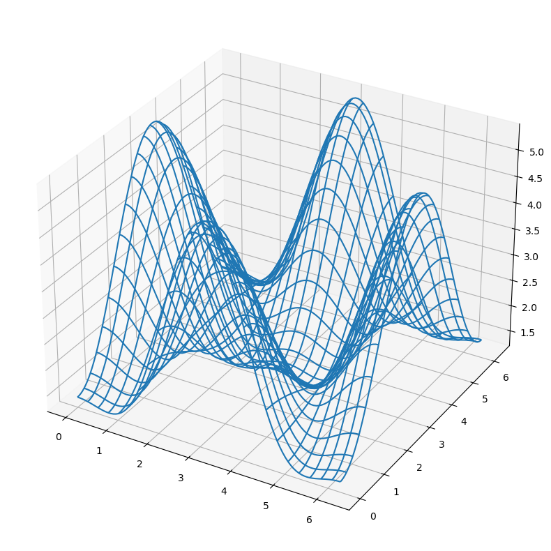
Coutour plots with axis level projections
fig = plt.figure(figsize=(18, 8))
# `ax` is a 3D-aware axis instance, because of the projection='3d' keyword argument to add_subplot
ax = fig.add_subplot(1, 1, 1, projection='3d')
ax.plot_surface(X, Y, Z, rstride=4, cstride=4, alpha=0.25)
cset = ax.contour(X, Y, Z, zdir='z', offset=-np.pi, cmap=plt.cm.coolwarm)
cset = ax.contour(X, Y, Z, zdir='x', offset=-np.pi, cmap=plt.cm.coolwarm)
cset = ax.contour(X, Y, Z, zdir='y', offset=3*np.pi, cmap=plt.cm.coolwarm)
ax.set_xlim3d(-np.pi, 2*np.pi);
ax.set_ylim3d(0, 3*np.pi);
ax.set_zlim3d(-np.pi, 2*np.pi);
plt.show()
Changing viewing angle
We can change the perspective of a 3D plot using the
view_initfunction, which takes two arguments: the elevation and the azimuth angles (unit degrees)
fig = plt.figure(figsize=(8, 8))
# `ax` is a 3D-aware axis instance, because of the projection='3d' keyword argument to add_subplot
ax = fig.add_subplot(2, 1, 1, projection='3d')
ax.plot_wireframe(X, Y, Z, rstride=4, cstride=4, alpha=0.25)
ax.view_init(30, 45)
# `ax` is a 3D-aware axis instance, because of the projection='3d' keyword argument to add_subplot
ax = fig.add_subplot(2,1,2, projection='3d')
ax.plot_wireframe(X, Y, Z, rstride=4, cstride=4, alpha=0.25)
ax.view_init(70, 30)
fig.tight_layout()
<div style="text-align: right; margin-top: 12px; font-size: 0.85em;"><a href="#table-of-contents" style="color: #667eea; text-decoration: none;">↑ Back to TOC</a></div>
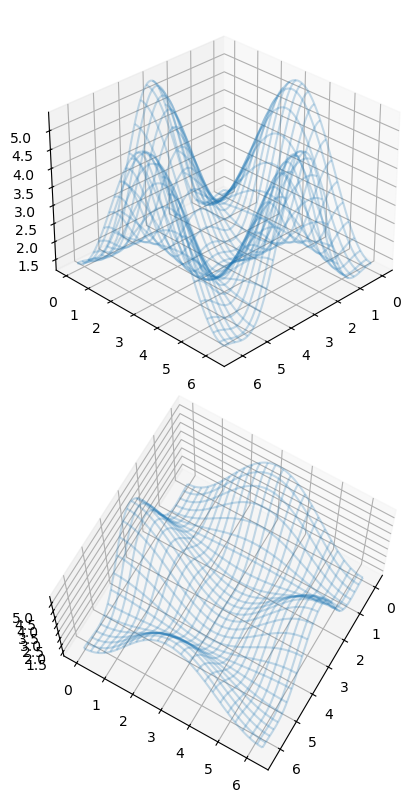
🎯 Key Takeaways
- Matplotlib's
pyplotinterface provides MATLAB-like plotting:plt.plot(),plt.show(). - Customize plots with labels, titles, legends, colors, line styles, and markers.
- Control axes with
plt.xlim(),plt.ylim(),plt.xticks(),plt.yticks(). - Use
plt.subplot()orfig, axes = plt.subplots()for multi-panel figures. - Common plot types: line, scatter, bar, histogram, pie — choose based on your data.
—
—